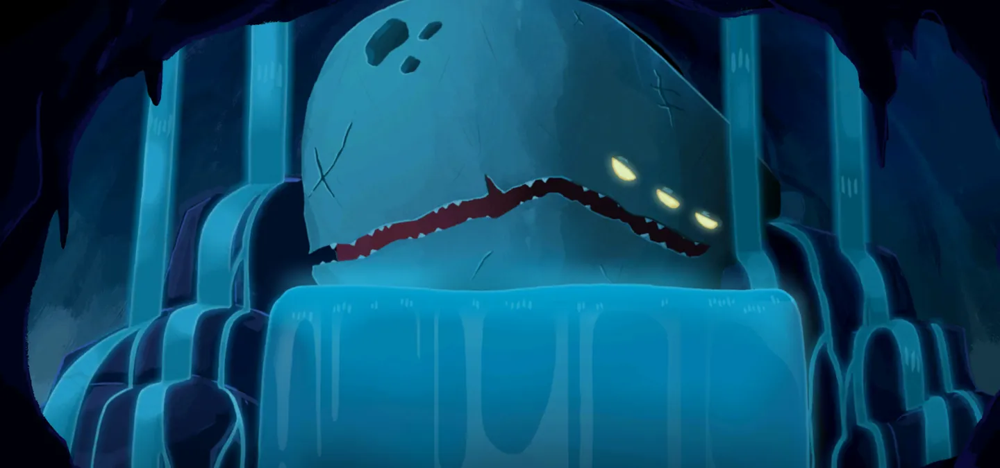
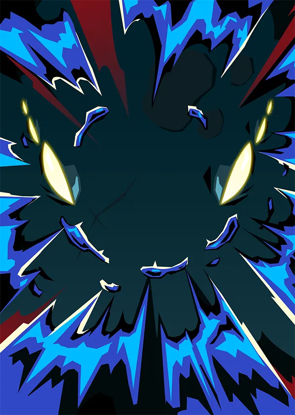
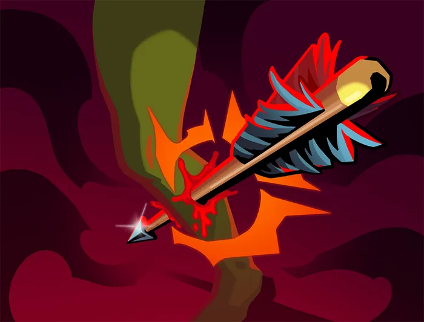
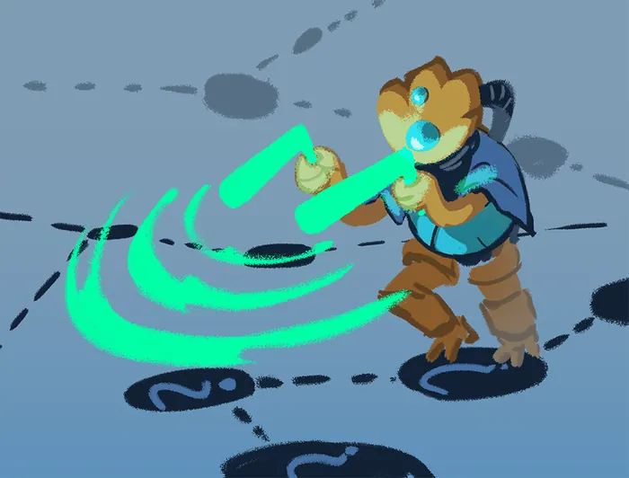
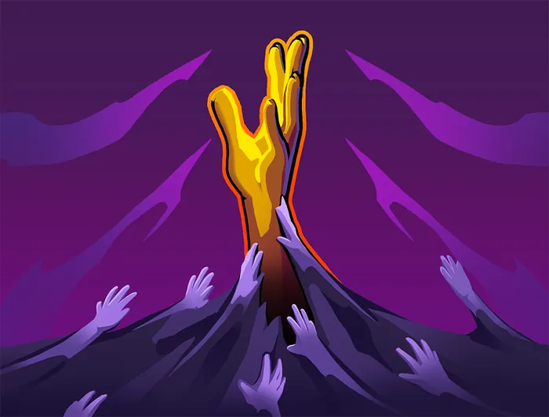

Neow — Mère de la Résurrection (exilée)
Patch de Référence :
v0.111.0 Beta(Dernier patch officiel) Acte d'apparition : Acte 1 Déblocage (Epoch) :NeowEpochThème Visuel / Couleur :#28454F
🎨 Portraits & Illustrations
| Icône Ancien | Illustration Principale |
|---|---|
 |
🎮 Intégration Visuelle GBA (Butano)
- Palette suggérée pour la GBA : Teinte dominante
#28454F. À mapper sur une palette 16 couleurs (15 couleurs + transparent) pour le BG de portrait. - Dimensions portrait GBA : 64x64 pixels (mode 4 bpp tilemap) positionné à
(X: 16, Y: 24)sur l'écran 240x160. - Couleur des boutons / encadrements UI :
rgba(0, 26, 51, 0.5)converti en code couleur GBA 15-bit BGR555.
📜 Rôle & Lore dans l'Ascension
Notes de conception :
* neow_first_room
* neow_third_option
* neow_modifier_run
⚠️ Paires de Reliques Exclusives
Certaines reliques ne peuvent pas être choisies ou générées ensemble dans un même tirage :
* ❌ CursedPearl et GoldenPearl s'excluent mutuellement.
* ❌ HeftyTablet et ArcaneScroll s'excluent mutuellement.
* ❌ LeafyPoultice et NewLeaf s'excluent mutuellement.
* ❌ PrecariousShears et PreciseScissors s'excluent mutuellement.
* ❌ NeowsSacrifice et PhialHolster s'excluent mutuellement.
* ❌ NeowsSacrifice et LostCoffer s'excluent mutuellement.
🎲 Règles des Slots & Choix
- Nombre total d'options : 30 reliques disponibles.
- Structure des tirages : 2 slot(s).
- Slot #1 (Groupe : blessing) : 2 choix parmi 20 reliques présentées.
- Slot #2 (Groupe : curse) : 1 choix parmi 10 reliques présentées.
🏆 Catalogue Complet des Reliques (Classées par Tier)
⭐ Tier S (4 reliques)
 Coffret perdu (
Coffret perdu (LOST_COFFER)
- Tier :
S| Rareté :Ancient - Description : Gagnez 1 récompense de carte et obtenez 1 Potion aléatoire.
- Implémentation GBA C++ : Gestion Potion : Ajoute une potion à l'inventaire
PotionInventoryou modifie le nombre d'emplacements.
 Étui à fioles (
Étui à fioles (PHIAL_HOLSTER)
- Tier :
S| Rareté :Ancient - Description : Gagnez 1 nouvel emplacement de potion et obtenez 2 Potions aléatoires.
- Implémentation GBA C++ : Gestion Potion : Ajoute une potion à l'inventaire
PotionInventoryou modifie le nombre d'emplacements.
 Perle maudite (
Perle maudite (CURSED_PEARL)
- Tier :
S| Rareté :Ancient - Description : Recevez Cupidité. Obtenez 333 Pièces d'or.
- Implémentation GBA C++ : Effet Majeur Prioritaire : À implémenter en priorité dans le prototype MVP en raison de son fort impact stratégique.
 Cataplasme (
Cataplasme (LEAFY_POULTICE)
- Tier :
S| Rareté :Ancient - Description : Transformez 1 Frappe et 1 Défense et perdez 12 PV Max.
- Implémentation GBA C++ : Effet de Survie : Modifie
PlayerEntity::heal()ou déclenche un soin passif en début/fin de combat.
⭐ Tier A (6 reliques)
 Perle dorée (
Perle dorée (GOLDEN_PEARL)
- Tier :
A| Rareté :Ancient - Description : Lorsque vous obtenez cette relique, gagnez 150 Pièces d'or.
- Implémentation GBA C++ : Économie Run : Incrémente
RunState::gold. Impact direct sur les boutiques du marchand.
 Presse-papier en plomb (
Presse-papier en plomb (LEAD_PAPERWEIGHT)
- Tier :
A| Rareté :Ancient - Description : Choisissez 1 carte Incolore parmi 2 à ajoutez à votre Deck.
- Implémentation GBA C++ : Effet Passif : Hook standard dans
RelicManageravec écouteur d'événement (ON_COMBAT_START,ON_TURN_START, etc.).
 Parchemin énorme (
Parchemin énorme (MASSIVE_SCROLL)
- Tier :
A| Rareté :Ancient - Description : Choisissez 1 Carte Multijoueur parmi 3 à ajouter à votre Deck.
- Implémentation GBA C++ : Transformation de Cartes : Déclenche un sous-état d'interface (
CardSelectScene) pour transformer, épurer ou choisir des cartes.
 Nouvelle page (
Nouvelle page (NEW_LEAF)
- Tier :
A| Rareté :Ancient - Description : Transformez 1 carte.
- Implémentation GBA C++ : Effet Passif : Hook standard dans
RelicManageravec écouteur d'événement (ON_COMBAT_START,ON_TURN_START, etc.).
 Petite capsule (
Petite capsule (SMALL_CAPSULE)
- Tier :
A| Rareté :Ancient - Description : Obtenez une Relique aléatoire.
- Choix Alternatif (Either/Or) :
Pierre volcanique - Implémentation GBA C++ : Effet Passif : Hook standard dans
RelicManageravec écouteur d'événement (ON_COMBAT_START,ON_TURN_START, etc.).
 Talisman de Neow (
Talisman de Neow (NEOWS_TALISMAN)
- Tier :
A| Rareté :Ancient - Description : Améliorez 1 de vos Frappes et 1 de vos Défenses.
- Choix Alternatif (Either/Or) :
Pommandre - Implémentation GBA C++ : Effet Passif : Hook standard dans
RelicManageravec écouteur d'événement (ON_COMBAT_START,ON_TURN_START, etc.).
⭐ Tier B (6 reliques)
 Conque retentissante (
Conque retentissante (BOOMING_CONCH)
- Tier :
B| Rareté :Ancient - Description : Au début des combats d'Élite, piochez 2 cartes supplémentaires et gagnez ⚡1⚡.
- Implémentation GBA C++ : Effet Passif : Hook standard dans
RelicManageravec écouteur d'événement (ON_COMBAT_START,ON_TURN_START, etc.).
 Tourment de Neow (
Tourment de Neow (NEOWS_TORMENT)
- Tier :
B| Rareté :Ancient - Description : Ajoutez 1 Fureur de Neow à votre Deck.
- Implémentation GBA C++ : Mécanique de Deck : Ajoute
Fureur de Neow(NEOWS_FURY) au deck du joueur lors de la sélection. Nécessite l'enregistrement de l'ID de carte dansCardPool.
Cartes Dérivées / Associées :

Fureur de Neow (NEOWS_FURY) — Attaque (Coût :1⚡)- Effet de base : Infligez 10 dégâts. Placez jusqu'à 2 cartes de votre Défausse dans votre Main. Épuisement.
- Effet amélioré : Infligez 14 dégâts. Placez jusqu'à 3 cartes de votre Défausse dans votre Main. Épuisement.
- Amélioration :
damage: +4, cards: +1
 Ciseaux précis (
Ciseaux précis (PRECISE_SCISSORS)
- Tier :
B| Rareté :Ancient - Description : Retirez 1 carte de votre Deck.
- Implémentation GBA C++ : Effet Passif : Hook standard dans
RelicManageravec écouteur d'événement (ON_COMBAT_START,ON_TURN_START, etc.).
 Pommandre (
Pommandre (POMANDER)
- Tier :
B| Rareté :Ancient - Description : Améliorez une carte.
- Choix Alternatif (Either/Or) :
Talisman de Neow - Implémentation GBA C++ : Effet Passif : Hook standard dans
RelicManageravec écouteur d'événement (ON_COMBAT_START,ON_TURN_START, etc.).
 Tablette lourde (
Tablette lourde (HEFTY_TABLET)
- Tier :
B| Rareté :Ancient - Description : Choisissez 1 carte Rare parmi 3 à ajouter à votre Deck. Ajoutez 1 Blessure à votre Deck.
- Implémentation GBA C++ : Mécanique de Deck : Ajoute
Blessure(INJURY) au deck du joueur lors de la sélection. Nécessite l'enregistrement de l'ID de carte dansCardPool.
Cartes Dérivées / Associées :

Blessure (INJURY) — Malédiction (Coût :0⚡)- Effet de base : Injouable.
- Effet amélioré : Injouable.
 Grande capsule (
Grande capsule (LARGE_CAPSULE)
- Tier :
B| Rareté :Ancient - Description : Obtenez 2 Reliques aléatoires. Ajoutez une Frappe et une Défense à votre Deck.
- Implémentation GBA C++ : Effet Passif : Hook standard dans
RelicManageravec écouteur d'événement (ON_COMBAT_START,ON_TURN_START, etc.).
⭐ Tier C (5 reliques)
 Parchemin arcanique (
Parchemin arcanique (ARCANE_SCROLL)
- Tier :
C| Rareté :Ancient - Description : Obtenez une Carte Rare aléatoire.
- Implémentation GBA C++ : Transformation de Cartes : Déclenche un sous-état d'interface (
CardSelectScene) pour transformer, épurer ou choisir des cartes.
 Pierre volcanique (
Pierre volcanique (LAVA_ROCK)
- Tier :
C| Rareté :Ancient - Description : Le Boss de l'Acte 1 octroie 2 Reliques lorsqu'il est vaincu.
- Choix Alternatif (Either/Or) :
Petite capsule - Implémentation GBA C++ : Effet Passif : Hook standard dans
RelicManageravec écouteur d'événement (ON_COMBAT_START,ON_TURN_START, etc.).
 Osselets de Neow (
Osselets de Neow (NEOWS_BONES)
- Tier :
C| Rareté :Ancient - Description : Gagnez 2 Reliques de Neow aléatoires. Ajoutez 1 Malédiction aléatoire à votre Deck.
- Implémentation GBA C++ : Effet Passif : Hook standard dans
RelicManageravec écouteur d'événement (ON_COMBAT_START,ON_TURN_START, etc.).
 Forces précaires (
Forces précaires (PRECARIOUS_SHEARS)
- Tier :
C| Rareté :Ancient - Description : Retirez 2 cartes de votre Deck. Perdez 16 PV.
- Implémentation GBA C++ : Effet Passif : Hook standard dans
RelicManageravec écouteur d'événement (ON_COMBAT_START,ON_TURN_START, etc.).
 Creuset en argent (
Creuset en argent (SILVER_CRUCIBLE)
- Tier :
C| Rareté :Ancient - Description : Vos 3 premières récompenses de carte sont Améliorées. Le premier Coffre trésor que vous ouvrez est vide.
- Implémentation GBA C++ : Effet Passif : Hook standard dans
RelicManageravec écouteur d'événement (ON_COMBAT_START,ON_TURN_START, etc.).
⭐ Tier D (4 reliques)
 Caisse de parchemins (
Caisse de parchemins (SCROLL_BOXES)
- Tier :
D| Rareté :Ancient - Description : Choisissez 1 pack de cartes parmi 2 à ajouter à votre Deck.
- Implémentation GBA C++ : Transformation de Cartes : Déclenche un sous-état d'interface (
CardSelectScene) pour transformer, épurer ou choisir des cartes.
 Bottes ailées (
Bottes ailées (WINGED_BOOTS)
- Tier :
D| Rareté :Ancient - Description : Vous pouvez ignorer les trajets indiqués sur la carte lorsque vous choisissez la prochaine salle 3 fois.
- Implémentation GBA C++ : Effet Passif : Hook standard dans
RelicManageravec écouteur d'événement (ON_COMBAT_START,ON_TURN_START, etc.).
 Huître nourrissante (
Huître nourrissante (NUTRITIOUS_OYSTER)
- Tier :
D| Rareté :Ancient - Description : Augmentez vos PV Max de 11.
- Choix Alternatif (Either/Or) :
Humidificateur en pierre - Implémentation GBA C++ : Effet Passif : Hook standard dans
RelicManageravec écouteur d'événement (ON_COMBAT_START,ON_TURN_START, etc.).
 Humidificateur en pierre (
Humidificateur en pierre (STONE_HUMIDIFIER)
- Tier :
D| Rareté :Ancient - Description : Lorsque vous vous Reposez à un Site de repos, augmentez vos PV Max de 5.
- Choix Alternatif (Either/Or) :
Huître nourrissante - Implémentation GBA C++ : Effet Passif : Hook standard dans
RelicManageravec écouteur d'événement (ON_COMBAT_START,ON_TURN_START, etc.).
⭐ Non classé (Spécial) (5 reliques)
 Canne à pêche (
Canne à pêche (FISHING_ROD)
- Tier :
Untiered| Rareté :Ancient - Description : Tous les 3 combats normaux, Améliorez une carte aléatoire de votre Deck.
- Implémentation GBA C++ : Effet Passif : Hook standard dans
RelicManageravec écouteur d'événement (ON_COMBAT_START,ON_TURN_START, etc.).
 Kaléidoscope (
Kaléidoscope (KALEIDOSCOPE)
- Tier :
Untiered| Rareté :Ancient - Description : Recevez 2 récompenses de cartes d'autres personnages.
- Implémentation GBA C++ : Effet Passif : Hook standard dans
RelicManageravec écouteur d'événement (ON_COMBAT_START,ON_TURN_START, etc.).
 Baguette de rhabdomancie (
Baguette de rhabdomancie (DOWSING_ROD)
- Tier :
Untiered| Rareté :Ancient - Description : Ajoutez 1 Rhabdomancie à votre Deck.
- Implémentation GBA C++ : Mécanique de Deck : Ajoute
Rhabdomancie(DOWSING) au deck du joueur lors de la sélection. Nécessite l'enregistrement de l'ID de carte dansCardPool.
Cartes Dérivées / Associées :

Rhabdomancie (DOWSING) — Quête (Coût :0⚡)- Effet de base : Injouable. Après avoir visité encore 5 salles ?, se transforme en Abondance.
- Effet amélioré : Injouable. Après avoir visité encore 5 salles ?, se transforme en Abondance.
 Sacrifice de Neow (
Sacrifice de Neow (NEOWS_SACRIFICE)
- Tier :
Untiered| Rareté :Ancient - Description : Obtenez 1 Ambre gris et ajoutez 1 Culpabilité à votre Deck.
- Implémentation GBA C++ : Mécanique de Deck : Ajoute
Culpabilité(GUILTY) au deck du joueur lors de la sélection. Nécessite l'enregistrement de l'ID de carte dansCardPool.
Cartes Dérivées / Associées :

Culpabilité (GUILTY) — Malédiction (Coût :0⚡)- Effet de base : Injouable. Retiré de votre Deck au bout de 5 combats.
- Effet amélioré : Injouable. Retiré de votre Deck au bout de 5 combats.
 Tresse soyeuse (
Tresse soyeuse (SILKEN_TRESS)
- Tier :
Untiered| Rareté :Ancient - Description : Perdez toutes vos Pièces d'or. Envoûtez toutes les cartes de votre première récompense de cartes avec Glamour.
- Implémentation GBA C++ : Effet Passif : Hook standard dans
RelicManageravec écouteur d'événement (ON_COMBAT_START,ON_TURN_START, etc.).
💬 Dialogues & Répliques
Les dialogues s'affichent dans la boîte de dialogue inférieure (240x40 px) sur la GBA avec défilement fluide au bouton A :
🗣️ Première Rencontre (Toutes runs confondues)
- 👑 Ancien :
Je t'ai... reconstitué....
...va... ..monte.....
🗣️ Soldat de Fer (Ironclad)
-
👑 Ancien :
..lève-toi.. mon.. guerrier...
..le moment est venu... de combattre...à nouveau... -
👑 Ancien :
..encore.. sombré.. dans la rage... bien...
-
👑 Ancien :
..souviens-toi.. la.. première..fois
...que tu ..vins...auprès de moi.. -
👑 Ancien :
..si..furieux...
-
👑 Ancien :
...si..utile...
🗣️ La Silencieuse (Silent)
-
👑 Ancien :
...de retour.. de... l'extérieur ?
..je savais... que vous... reviendriez... -
👑 Ancien :
...votre..
...trophée.. vous attend... -
👑 Ancien :
..tous deux...connaissent..l'agonie..de la..famille...
-
👤 SILENT :
...
-
👑 Ancien :
..toujours...en quête..d'approbation...?
...QUELLE SOTTISE...
🗣️ Le Défectueux (Defect)
-
👑 Ancien :
...assemblage.. qu'es-tu...
.... devenu...? -
👑 Ancien :
...il.. peut...
....vous.. ...réparer.... -
👑 Ancien :
...Je.. ne... ..peux pas...
....te faire.. oublier.... -
👤 DEFECT :
-
👑 Ancien :
...bien....
🗣️ Le Régent (Regent)
-
👤 REGENT :
Énorme créature bleue, je suis le futur Roi !
-
👑 Ancien :
..mon petit...
...tu... me.. ..reverras... ...encore.... -
👑 Ancien :
...encore..?
-
👤 REGENT :
Pourquoi je n'arrive pas à gagner ?!
-
👑 Ancien :
...reçois.. ma... ..bénédiction...
-
👤 REGENT :
...oui, merci, Neow.
🗣️ La Nécrolieuse (Necrobinder)
-
👑 Ancien :
...nous.... avons... ..le même... ..but....
-
👤 NECROBINDER :
IL A TUÉ TOUS CEUX QUE J'AIME !!
-
👑 Ancien :
...je te donne..... mon pouvoir...
-
👑 Ancien :
Il... respire.. ....encore...
-
👤 NECROBINDER :
Est-ce ...même... possible...?
-
👑 Ancien :
... L'Architecte.... ..faiblit....
..et nous.... plus puissantes...
🗣️ Générique (Tout Personnage)
-
👑 Ancien :
...salutations... ..encore.....
-
👑 Ancien :
...réveille-toi...
..Réveille-toi..... -
👑 Ancien :
..reçois.... ma....
..bénédiction.. ...et pars...... -
👑 Ancien :
..Je t'ai... ..ramenée / ... ..à la vie...
-
👑 Ancien :
...tue.. l'ARCHITECTE
⬅️ Retour au Sommaire de la Bible | ⚙️ Spécifications Techniques GBA